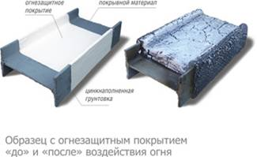

Огнезащитные краски ПЛАМКОР

Заказать материалы, получить полные консультации и расчеты вы можете у специалистов компании АнКорИнжиниринг. Так же вы можете заказать нанесение материалов ПЛАМКОР.
|
ПЛАМКОР® - 1 Огнезащитная вспучивающаяся краска (ТУ 2316-082-12288779-2011) |
Описание Краска на основе водной винилацетатной дисперсии, содержащая газообразующие и пенообразующие наполнители, пигменты и функциональные добавки. Огнезащитные свойства покрытия ПЛАМКОР-1 определяются имеющимися на него сертификатами соответствия и протоколами испытаний, выданными аккредитованными органами по сертификации и испытательными центрами в установленном законом порядке. Назначение и область применения Защита от воздействия огня металлоконструкций производственных, гражданских и общественно-бытовых зданий и оборудования, эксплуатируемых в условиях макроклиматических районов УХЛ и ХЛ, типов атмосферы I и II, категорий размещения 3 и 4 по ГОСТ 15150-69, при относительной влажности воздуха не более 85 %. Покрытие не является водостойким. Применяется в качестве покрывного или промежуточного огнезащитного слоя в комплексных системах покрытий ПЛАМКОР, предназначенных для защиты металлоконструкций от коррозии и огня. Наносится по грунтовочным покрытиям ЦИНЭП® (ТУ 2312-022-12288779-2000), ЦИНОТАН® (ТУ 2312-017-12288779-2003), ЦВЭС® (ТУ 2312-004-12288779-99), ВИНИКОР-061 и ГФ - 021 с толщиной слоя 40-80 мкм, по другим видам грунтовок - по согласованию с производителем огнезащитной краски. В качестве верхнего покрывного слоя могут использоваться акриловые и другие эмали (по согласованию с производителем). Применение в комплексных системах покрытий с другими ЛКМ - по согласованию с представителями ВМП. Огнезащитная эффективность покрытия при приведенной толщине металла 3,4 мм:
Огнезащитная эффективность покрытия при приведенной толщине металла 5,8 мм - 90 мин при толщине покрытия 1,50 мм. Сертификация Свидетельство о государственной регистрации RU.66.01.40.015.E.000260.07.11 от 28.07.2011; Сертификаты соответствия № С-RU.ПБ34.В.00557 от 17.05.2011, № С-RU.ПБ34.В.00907 от 04.05.2012 и № С-RU.ПБ34.В.01359 от 21.11.2013 (обязательная сертификация). |
|
ПЛАМКОР® -2 Огнезащитная вспучивающаяся композиция (ТУ 2313-074-12288779-2008) |
Описание Композиция огнезащитная вспучивающаяся на основе акриловых сополимеров, органоразбавляемая. Назначение и область применения Защита от воздействия огня металлоконструкций производственных, гражданских и общественно-бытовых зданий и оборудования, эксплуатируемых в условиях макроклиматических районов УХЛ и ХЛ, типов атмосферы I и II, категорий размещения 2, 3, 4 по ГОСТ 15150 при относительной влажности воздуха не более 80 %. Покрытие не является влагостойким. Применяется в качестве верхнего или промежуточного огнезащитного слоя в комплексных системах покрытий ПЛАМКОР, предназначенных для защиты от коррозии и огня металлических конструкций. Рекомендуется наносить по грунтовкам ЦИНОТАН® (ТУ 2312-017-12288779), ЦВЭС® (ТУ 2312-004-12288779), ЦИНЭП® (ТУ 2312-022-12288779), ИЗОЛЭП®-primer (ТУ 2312-067-12288779), ИЗОЛЭП-mastic (ТУ 2312-065-12288779), ВИНИКОР-061 (ТУ 2312-001-54359536) и ГФ-021. В качестве покрывного слоя могут использоваться эмали: ПОЛИТОН-ХВ (ТУ 2313-100-12288779), ПОЛИТОН®-УР (ТУ 2312-029-12288779), ПОЛИТОН®-АК (ТУ 2313-028-12288779), ПОЛИТОН-УР (УФ) (ТУ 2312-03312288779) и ВИНИКОР-62 (ТУ 2312-001-54359536). Применение композиции в комплексных системах покрытий с грунтовками и покрывными эмалями других производителей - по согласованию с производителем композиции ПЛАМКОР-2. Огнезащитная эффективность покрытия: - при приведенной толщине металла 3,4 мм и толщине покрытия 0,8 мм - 45 мин; - при приведенной толщине металла 5,8 мм и толщине покрытия 1,5 мм - 90 мин; - при приведенной толщине металла 7,2 мм и толщине покрытия 2,1 мм - 120 мин. Сертификация Свидетельство о государственной регистрации № RU.66.01.40.015.E.000016.02.14 от 07.02.2014 Сертификаты соответствия № C-RU.ПБ34.В.00937 от 01.06.2012 г., № C-RU.ПБ34.В.01099 от 25.02.2013 г., № C-RU.ПБ34.В.01459 от 18.04.2014 г., № C-RU.ПБ34.В.01733 от 15.05.2015 г., № C-RU.ПБ34.В.01762 от 09.07.2015 г., № C-RU.ПБ34.В.01507 от 19.06.2015 г. и № C-RU.ПБ34.В.01871 от 24.02.2016 г. |
|
ПЛАМКОР®-3 Огнезащитная вспучивающаяся композиция (ТУ 2312-087-12288779-2012) |
Описание Двухупаковочная композиция, состоящая из эпоксидной основы и алифатического полиаминного отвердителя. Отличается высоким содержанием нелетучих веществ, позволяет получать толстослойное покрытие с высокими огнезащитными свойствами. Покрытие атмосферостойкое; при эксплуатации в условиях воздействия интенсивного УФ-излучения рекомендуется перекрывать финишной эмалью. Возможно нанесение при температуре окружающего воздуха до минус 5 °С. Назначение и область применения Защита от огня и коррозии металлоконструкций, эксплуатируемых в условиях макроклиматических районов У, УХЛ и ХЛ всех типов атмосферы и категорий размещения по ГОСТ 15150, в том числе в открытой промышленной атмосфере. Применяется в качестве верхнего или промежуточного огнезащитного слоя в комплексных системах покрытий, предназначенных для защиты от коррозии и огня металлических конструкций. Наносится по грунтовочным покрытиям ЦИНОТАН® (ТУ 2312-017-12288779-2003), ЦИНЭП® (ТУ 2312-022-12288779-2000), ИЗОЛЭП®-primer (ТУ 2312-067-12288779-2008), ЦВЭС® (ТУ 2312-004-12288779-99), ГФ-021 (ГОСТ 25129-82), Penguard Express или другим грунтовкам по согласованию с производителем огнезащитного состава. В качестве покрывного слоя рекомендуется использовать эмали ПОЛИТОН®-УР (УФ) (ТУ 2312-033-12288779-2002), ВИНИКОР-62 (ТУ 2312-001-54359536-2011), а также полиуретановые, винилово-эпоксидные или другие эмали по согласованию с производителем огнезащитного состава. Огнезащитная эффективность покрытия в условиях целлюлозного горения: - при приведенной толщине металла 3,4 мм и толщине покрытия 2,2 мм - 45 мин; - при приведенной толщине металла 3,4 мм и толщине покрытия 3,3 мм - 60 мин; - при приведенной толщине металла 5,8 мм и толщине покрытия 4,1 мм - 90 мин; - при приведенной толщине металла 7,2 мм и толщине покрытия 7,3 мм - 120 мин. Сертификация Свидетельство о государственной регистрации RU.66.01.40.015.E.000356.12.12 от 12.12.2012. Сертификаты соответствия № С-RU.ПБ34.В.01107 от 01.03.2013, № C-RU.ПБ34.В.01743 от 03.06.2015 г., № C-RU.ПБ34.В.01763 от 09.07.2015 г.(обязательная сертификация). Заключения НИИ ЛКП с ОМЗ «Виктория», ФГБОУ ВПО «МГСУ» (на сейсмостойкость). |
|
ПЛАМКОР®-5 Огнезащитная вспучивающаяся композиция (ТУ 2312-104-12288779-2015) |
Описание Двухупаковочная композиция, состоящая из эпоксидной основы и алифатического полиаминного отвердителя. Отличается высоким содержанием нелетучих веществ, позволяет получать толстослойное покрытие с высокими огнезащитными свойствами. Возможно нанесение при температуре окружающего воздуха до минус 5 °С. Назначение и область применения Защита от углеводородного пожара и от коррозии металлоконструкций, эксплуатируемых в условиях макроклиматических районов У, УХЛ и ХЛ всех типов атмосферы и категорий размещения по ГОСТ 15150, в том числе в открытой промышленной атмосфере. Применяется в комплексных системах покрытий по грунтовкам ЦИНЭП® (ТУ 2312-022-12288779-2000), ИЗОЛЭП®-primer (ТУ 2312-067-12288779-2008) и ЦВЭС® (ТУ 2312-004-12288779-99). При необходимости в качестве верхнего покрывного слоя могут использоваться полиуретановые и эпоксидно-виниловые эмали. Применение других грунтовок и эмалей с огнезащитной композицией ПЛАМКОР-5 необходимо согласовать с изготовителем огнезащитного материала. Огнезащитная эффективность покрытия в условиях углеводородного горения при приведенной толщине металла 5,8 мм и толщине покрытия 14,6 мм - 132 мин. Сертификация Свидетельство о государственной регистрации RU.66.01.40.008.E.000185.12.15 от 29.12.2015. Сертификаты соответствия № ССРП-RU.ЧС13.Н.00230 от 20.02.2016, № C-RU.ПБ34.В.01934 от 21.06.2016 (обязательная сертификация), |
|
ПЛАМКОР®- 4 Покрытие огнезащитное (ТУ 5767 - 105 - 12288779- 2015) |
Назначение и область применения Покрытие для конструктивной огнезащиты металлических строительных конструкций и оборудования внутри отапливаемых и неотапливаемых помещений с неагрессивной и слабоагрессивной средой и с относительной влажностью воздуха не более 75 %. Предназначено для применения в производственных, гражданских и общественно- бытовых зданиях. Для придания декоративных свойств и повышения стойкости к воздействию агрессивных паров и газов на покрытие могут быть нанесены эмали: ВИНИКОР®-62 (ТУ 2312-001- 54359536-2011), ПОЛИТОН®-АК (ТУ 2313-028-12288779-2002), ПОЛИТОН®-УР (ТУ 2312-029- 12288779-2002) и ПОЛИТОН®-УР (УФ) (ТУ 2312-033-12288779-2002). Описание Сухая смесь на основе портландцемента, вспученного вермикулита и волокнистых наполнителей. Покрытие образуется при нанесении на конструкции растворной смеси, полученной при затворении сухой смеси водой в условиях строительной площадки. |